Apache Iceberg · 核心原理图谱
开放表格式:三层元数据(catalog→metadata→manifest)快照隔离,列裁剪 + 分区裁剪 + 隐藏分区,引擎无关。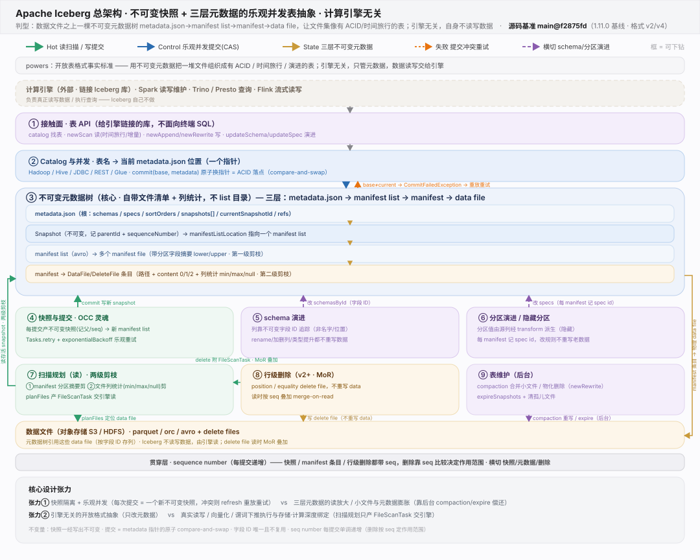
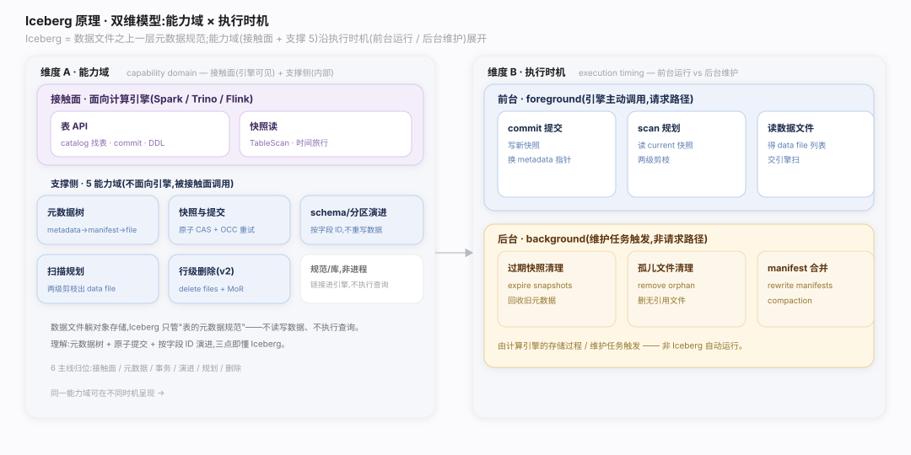
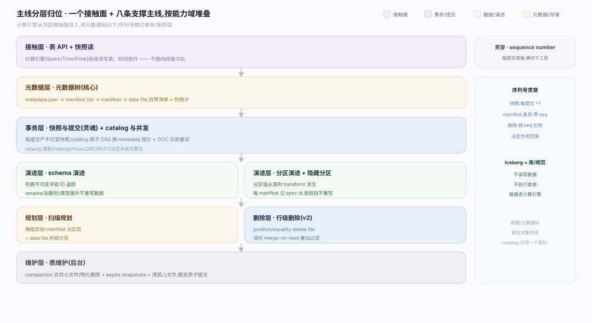
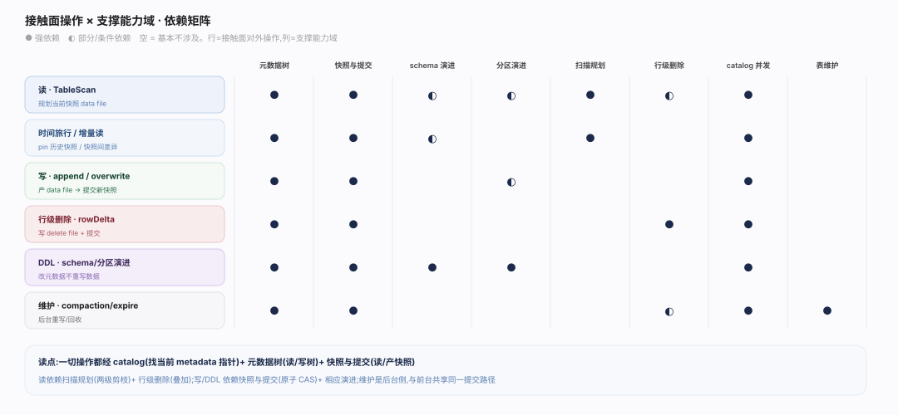
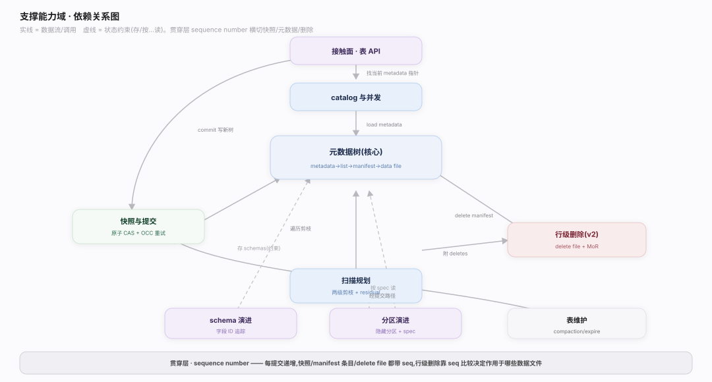
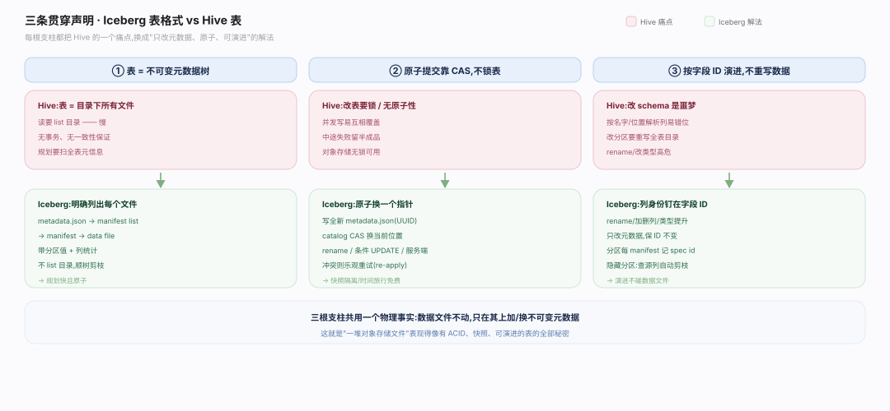
| 主线 | 入口锚点 |
|---|---|
| 接触面·表句柄 | core/src/main/java/org/apache/iceberg/BaseTable.java:42、:83（newScan） |
| 元数据·表状态 | core/src/main/java/org/apache/iceberg/TableMetadata.java:54、:416（formatVersion） |
| 元数据·序列化 | core/src/main/java/org/apache/iceberg/TableMetadataParser.java:122（write）、:295（read） |
| 快照与提交（灵魂） | core/src/main/java/org/apache/iceberg/SnapshotProducer.java:293（apply）、:485（commit retry） |
| 原子 CAS 提交 | core/src/main/java/org/apache/iceberg/TableOperations.java:64（commit） |
| OCC 冲突检测 | core/src/main/java/org/apache/iceberg/MergingSnapshotProducer.java:363 |
| schema 演进 | core/src/main/java/org/apache/iceberg/SchemaUpdate.java:467（apply）、api/.../Schema.java:376（findField by ID） |
| 分区演进/隐藏分区 | api/src/main/java/org/apache/iceberg/PartitionSpec.java:53、:83（specId） |
| 扫描规划 | core/src/main/java/org/apache/iceberg/ManifestGroup.java:177（planFiles）、core/.../DataTableScan.java:64 |
| 行级删除 | core/src/main/java/org/apache/iceberg/DeleteFileIndex.java:70、:151（forDataFile by seq） |
| 表维护 | core/src/main/java/org/apache/iceberg/RemoveSnapshots.java:61、api/.../actions/RewriteDataFiles.java:32 |
| manifest 写 | core/src/main/java/org/apache/iceberg/ManifestWriter.java:147、core/.../ManifestListWriter.java:63 |
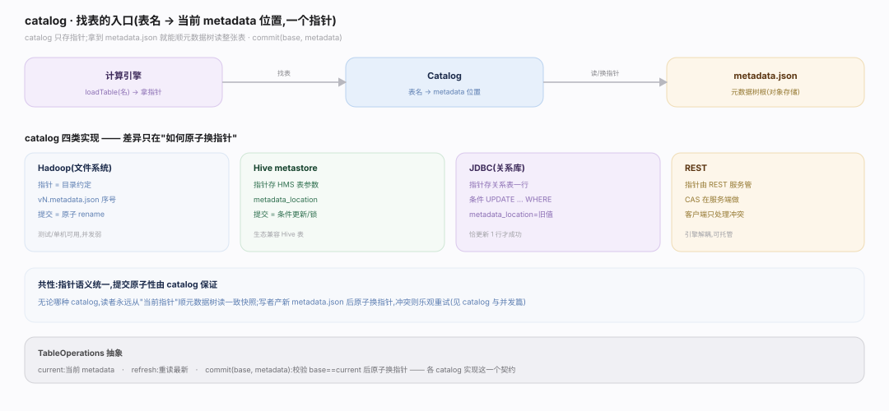
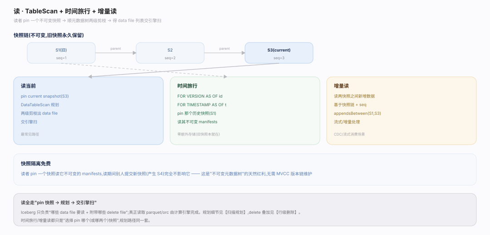
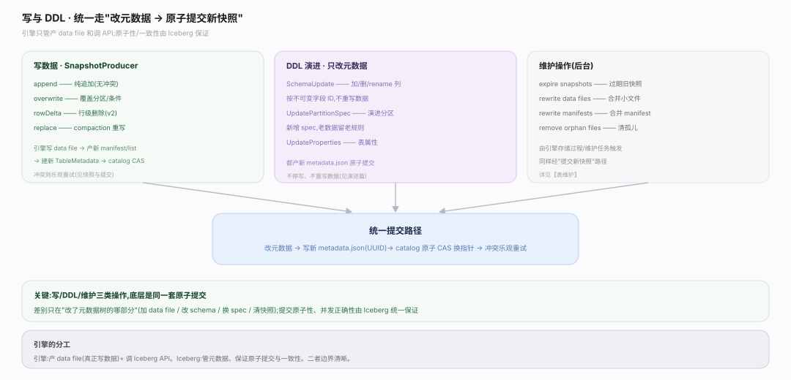
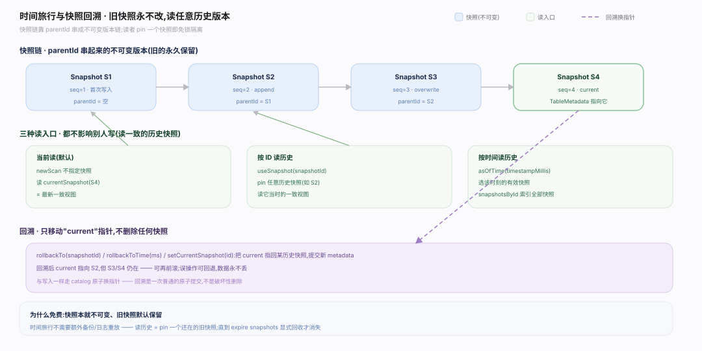
api/、core/)。| 结构 | 定义 | 职责 |
|---|---|---|
| Catalog | api/.../catalog/ | 表名→metadata 位置(Hadoop/Hive/JDBC/REST) |
| TableScan / DataTableScan | core/.../DataTableScan.java:64 | 读规划(含时间旅行 pin 快照) |
| SnapshotProducer | core/.../SnapshotProducer.java | 写提交(append/overwrite/rowDelta) |
| SchemaUpdate | core/.../SchemaUpdate.java | schema 演进 DDL |
| Snapshot(时间旅行) | api/.../Snapshot.java:42 | 按 id/时间读历史 |
| ManageSnapshots | api/.../ManageSnapshots.java:72/:62/:53 | 回溯:rollbackTo/rollbackToTime/setCurrentSnapshot |
| 论断 | 锚点 |
|---|---|
| BaseTable：引擎拿到的表句柄，newScan/currentSnapshot/updateSchema 等 | core/src/main/java/org/apache/iceberg/BaseTable.java:42 |
| newScan 造 TableScan（读入口） | core/src/main/java/org/apache/iceberg/BaseTable.java:83 |
| currentSnapshot 拿当前快照 | core/src/main/java/org/apache/iceberg/BaseTable.java:145 |
| TableScan 契约（planFiles/时间旅行） | api/src/main/java/org/apache/iceberg/TableScan.java:22 |
| 时间旅行读：useSnapshot(id) pin 历史快照 | api/src/main/java/org/apache/iceberg/TableScan.java:38 |
| 时间旅行读：asOfTime(ms) 按时间选快照 | api/src/main/java/org/apache/iceberg/TableScan.java:62 |
| 读的 planFiles 落到 DataTableScan.doPlanFiles | core/src/main/java/org/apache/iceberg/DataTableScan.java:64 |
| Snapshot 不可变，读者 pin 后免锁隔离 | core/src/main/java/org/apache/iceberg/BaseSnapshot.java:36 |
| 写经 SnapshotProducer.commit（append/overwrite/rowDelta 统一路径） | core/src/main/java/org/apache/iceberg/SnapshotProducer.java:480 |
| DDL 演进经 UpdateSchema（不重写数据） | core/src/main/java/org/apache/iceberg/BaseTable.java:165 |
| catalog 找表：TableMetadata 是引擎可见的表状态 | core/src/main/java/org/apache/iceberg/TableMetadata.java:54 |
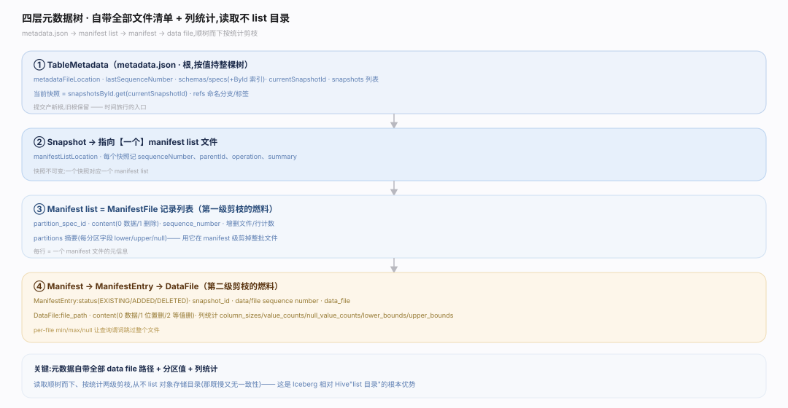
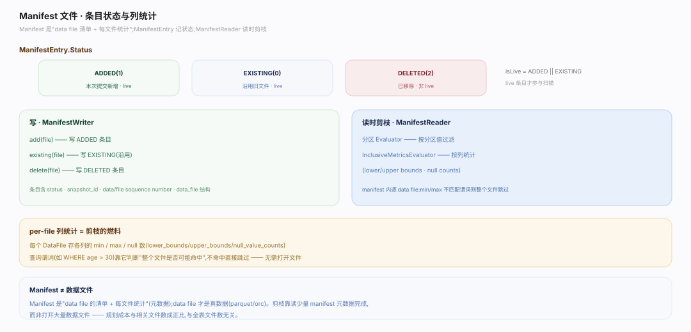
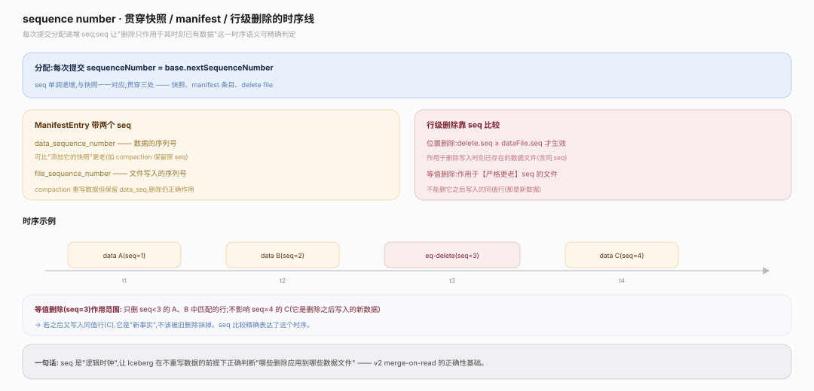
core/、api/)。write.metadata.metrics.* 控制哪些列记 min/max(全记占空间、少记剪枝弱);对过滤列开、对大文本列关。| 机制 | 锚点 |
|---|---|
| 当前快照 = snapshotsById.get(currentSnapshotId) | core/.../TableMetadata.java:536 |
| Snapshot.manifestListLocation:快照指向一个 manifest list | api/.../Snapshot.java:171 |
| isLive = ADDED‖EXISTING | core/.../ManifestEntry.java:77 |
| 写:ManifestWriter add/existing/delete | core/.../ManifestWriter.java:147 |
| 每次提交 seq = base.nextSequenceNumber | core/.../SnapshotProducer.java:297 |
| ManifestEntry 带 data/file sequence number | core/.../ManifestEntry.java:104 |
| 结构 | 定义 | 职责 |
|---|---|---|
| TableMetadata | core/.../TableMetadata.java:245 | 根:schemas/specs/snapshots/current |
| Snapshot | api/.../Snapshot.java:42 | 指向一个 manifest list |
| ManifestFile | api/.../ManifestFile.java:30 | manifest 元(路径/spec/分区摘要/计数) |
| ManifestEntry | core/.../ManifestEntry.java:28 | data file 条目(status/seq/DataFile) |
| DataFile | api/.../DataFile.java:35 | 数据文件(路径/content/列统计) |
| ManifestReader | core/.../ManifestReader.java:269 | 读+分区/统计剪枝 |
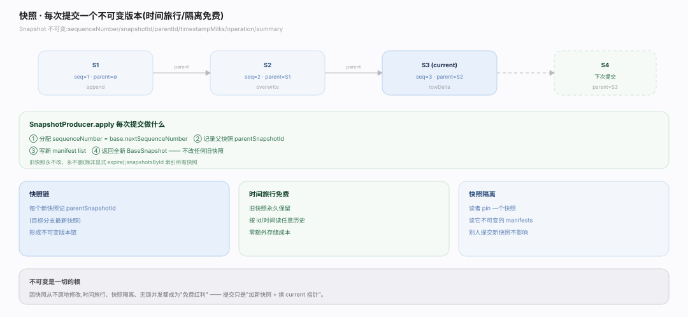
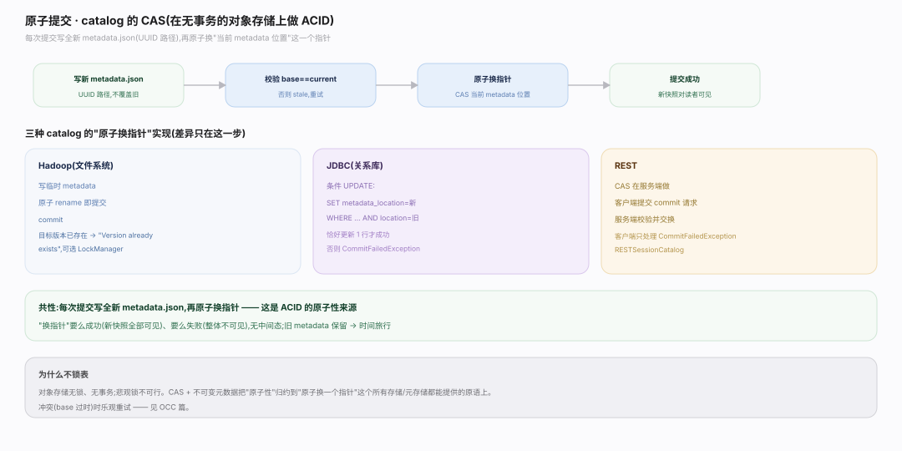
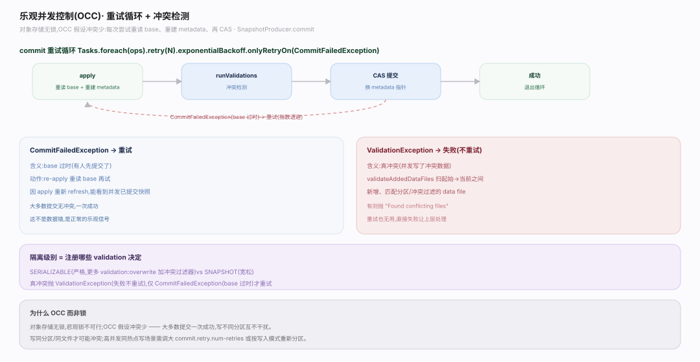
core/)。| 结构 | 定义 | 职责 |
|---|---|---|
| Snapshot / BaseSnapshot | api/.../Snapshot.java:42 | 不可变快照(seq/parent/manifests) |
| SnapshotProducer | core/.../SnapshotProducer.java:485 | 提交流程 + 乐观重试 |
| HadoopTableOperations | hadoop/HadoopTableOperations.java:132 | rename 原子提交(文件系统) |
| JdbcTableOperations | jdbc/JdbcTableOperations.java:103 | 条件 UPDATE 提交(元存储) |
| MergingSnapshotProducer | core/.../MergingSnapshotProducer.java:363 | 冲突检测 validation |
| 论断 | 锚点 |
|---|---|
| SnapshotProducer 是所有写操作基类 | core/src/main/java/org/apache/iceberg/SnapshotProducer.java:87 |
| apply：重读 base、分配序列号、写新 manifest list、产 BaseSnapshot | core/src/main/java/org/apache/iceberg/SnapshotProducer.java:293 |
| sequenceNumber = base.nextSequenceNumber() | core/src/main/java/org/apache/iceberg/SnapshotProducer.java:297 |
| commit 主体：Tasks.foreach(ops).retry(...).onlyRetryOn(CommitFailedException) | core/src/main/java/org/apache/iceberg/SnapshotProducer.java:485 |
| runValidations：每次尝试内重跑冲突检测 | core/src/main/java/org/apache/iceberg/SnapshotProducer.java:300、:371 |
| 冲突检测 validateAddedDataFiles → "Found conflicting files" | core/src/main/java/org/apache/iceberg/MergingSnapshotProducer.java:363 |
| 全新 metadata.json（UUID 路径）由 writeNewMetadata 写 | core/src/main/java/org/apache/iceberg/BaseMetastoreTableOperations.java:155 |
| commit 校验 base==current 后原子换指针 | core/src/main/java/org/apache/iceberg/TableOperations.java:28 |
| JDBC 条件 UPDATE 恰好更 1 行才成功 | core/src/main/java/org/apache/iceberg/jdbc/JdbcUtil.java:66 |
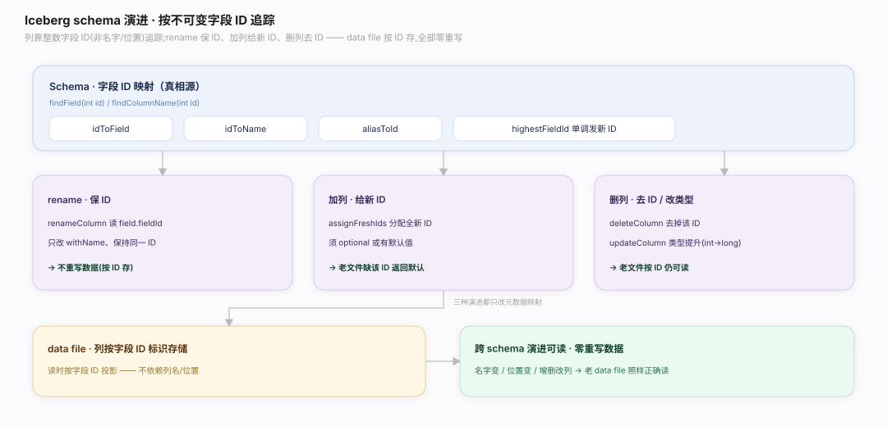
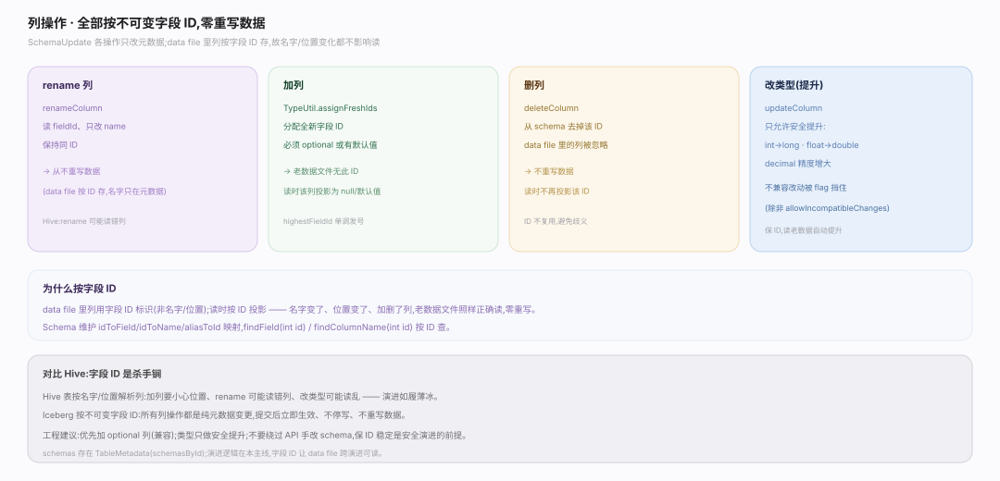
api/、core/)。allowIncompatibleChanges,兼容性差;optional 列加入零风险。| 结构 | 定义 | 职责 |
|---|---|---|
| Schema | api/.../Schema.java:78 | idToField/idToName/aliasToId 字段 ID 映射 |
| SchemaUpdate.renameColumn | core/.../SchemaUpdate.java:205 | 保 ID 只改名,不重写数据 |
| SchemaUpdate(加/删/改) | core/.../SchemaUpdate.java | assignFreshIds 加列 / deleteColumn / updateColumn 类型提升 |
| schemasById | core/.../TableMetadata.java | 保留所有历史 schema,current-schema-id 指当前 |
| 论断 | 锚点 |
|---|---|
| Schema 主体：靠不可变字段 ID 追踪列 | api/src/main/java/org/apache/iceberg/Schema.java:56 |
| idToField：ID→字段映射（读投影按 ID 而非名字/位置） | api/src/main/java/org/apache/iceberg/Schema.java:78 |
| findField(int id)：按 ID 定位（数据文件也按 ID 存列） | api/src/main/java/org/apache/iceberg/Schema.java:376 |
| SchemaUpdate 实现 UpdateSchema，收集演进操作 | core/src/main/java/org/apache/iceberg/SchemaUpdate.java:51 |
| addColumn：分配全新 ID，须 optional/有默认，不重写数据 | core/src/main/java/org/apache/iceberg/SchemaUpdate.java:100 |
| deleteColumn：去掉 ID（ID 不复用） | core/src/main/java/org/apache/iceberg/SchemaUpdate.java:190 |
| renameColumn：保 ID 只改名 | core/src/main/java/org/apache/iceberg/SchemaUpdate.java:205 |
| updateColumn：仅安全类型提升（int→long 等） | core/src/main/java/org/apache/iceberg/SchemaUpdate.java:273 |
| apply：产出新 Schema，提交新快照原子生效 | core/src/main/java/org/apache/iceberg/SchemaUpdate.java:467 |
| schemasById 存历史 schema（老快照按当时 schema 读） | core/src/main/java/org/apache/iceberg/TableMetadata.java:452 |
| 演进只改元数据，经 catalog 原子换指针提交 | core/src/main/java/org/apache/iceberg/TableMetadata.java:444 |
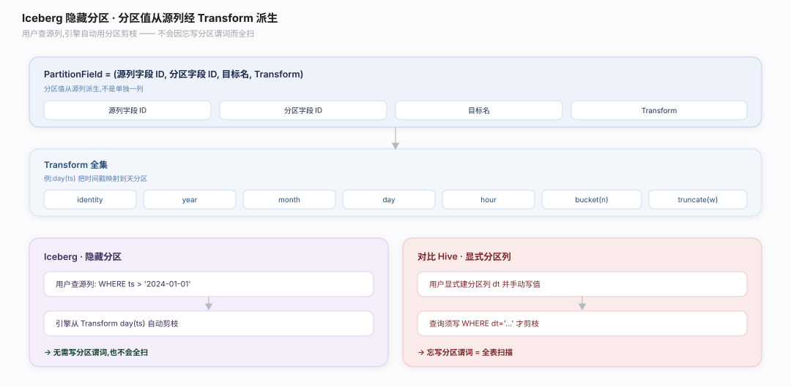
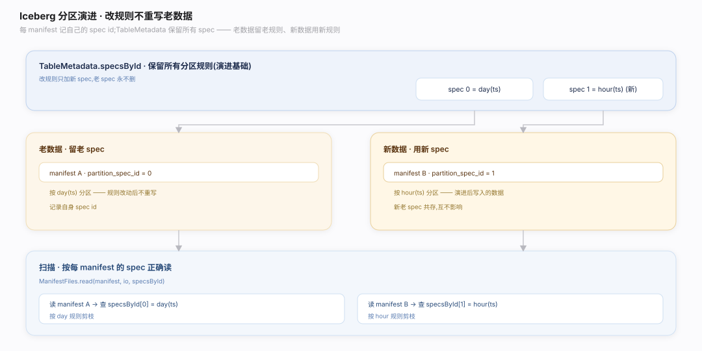
api/、core/)。bucket(n) 控分区数;时间用 day/hour(按查询粒度);别用 identity 于高基数列(分区爆炸)。day 细化到 hour);新老 spec 共存,查询自动适配,无需重写。| 结构 | 定义 | 职责 |
|---|---|---|
| PartitionSpec / PartitionField | api/.../PartitionSpec.java:619 | (源列 ID, 分区字段 ID, name, Transform) 派生分区 |
| Transforms | api/.../transforms/Transforms.java:88 | identity/bucket/truncate/year/month/day/hour |
| ManifestFile.partition_spec_id | api/.../ManifestFile.java:37 | 每 manifest 记自己写入时的 spec id |
| specsById | core/.../TableMetadata.java:262 | 保留所有分区规则(演进基础) |
| ManifestFiles.read(...) | core/.../ManifestGroup.java:345 | 按每 manifest 的 spec 正确读/剪枝 |
| 论断 | 锚点 |
|---|---|
| PartitionSpec 主体：从源列派生分区（隐藏分区） | api/src/main/java/org/apache/iceberg/PartitionSpec.java:53 |
| specId：每个 spec 有唯一 id | api/src/main/java/org/apache/iceberg/PartitionSpec.java:60、:83 |
| 每个 manifest 记自己的 spec_id → 老数据留老分区规则 | core/src/main/java/org/apache/iceberg/BaseSnapshot.java:212（dataManifests） |
| 表可存多个 spec（演进不重写老数据） | core/src/main/java/org/apache/iceberg/TableMetadata.java:460（spec()） |
| 分区剪枝在 manifest 级用分区值过滤 | core/src/main/java/org/apache/iceberg/ManifestGroup.java:177（planFiles） |
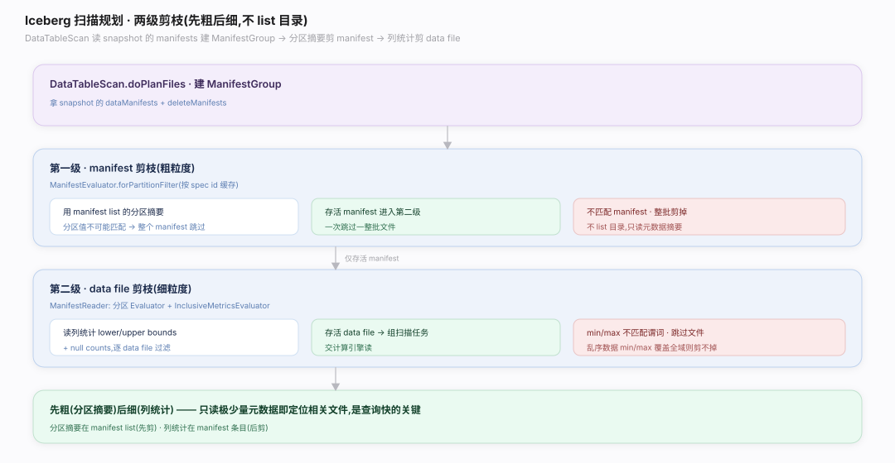
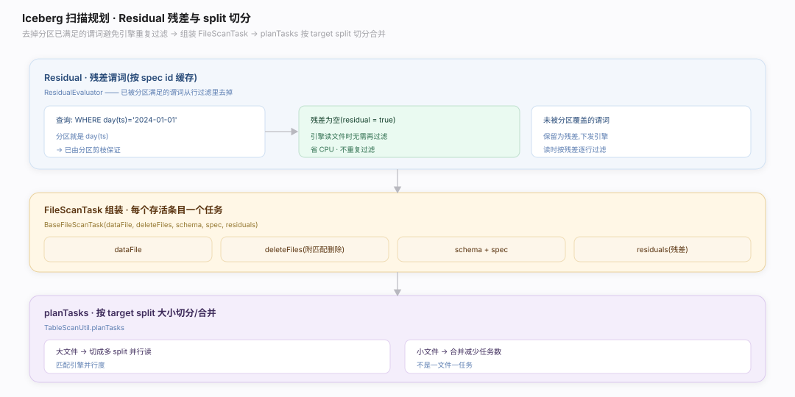
core/)。| 结构 | 定义 | 职责 |
|---|---|---|
| DataTableScan | core/.../DataTableScan.java:64 | 规划入口(读快照 manifests) |
| ManifestGroup | core/.../ManifestGroup.java:279 | 两级剪枝 + 任务组装 |
| ManifestEvaluator | core/.../ManifestGroup.java:279 | 第一级 manifest 分区剪 |
| InclusiveMetricsEvaluator | core/.../ManifestReader.java:269 | 第二级文件列统计剪 |
| ResidualEvaluator | core/.../ManifestGroup.java:182 | 残差(去掉分区已满足的谓词) |
| BaseFileScanTask | core/.../ManifestGroup.java:402 | 扫描任务(data file+deletes+residual) |
| planTasks split 切分 | core/.../BaseTableScan.java:43 | 按 target size 切/合并文件任务 |
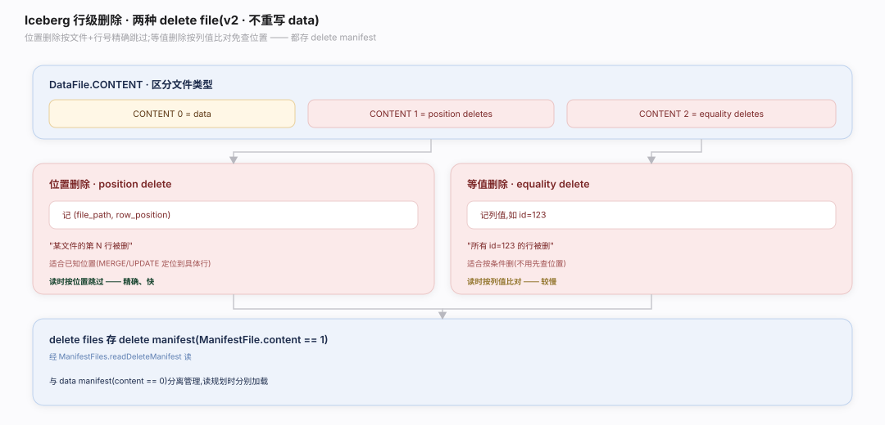
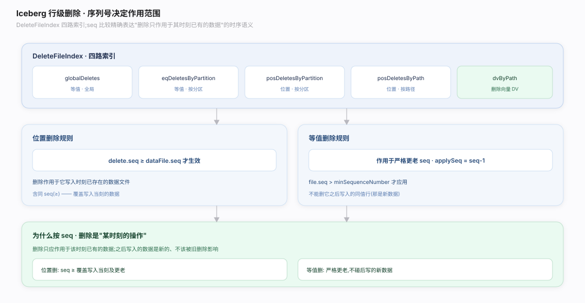
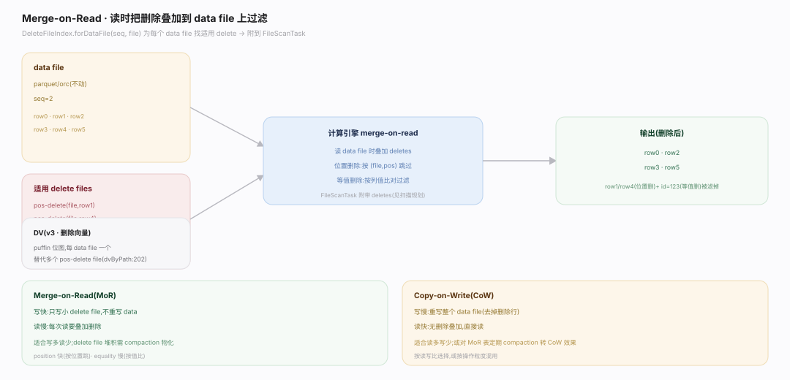
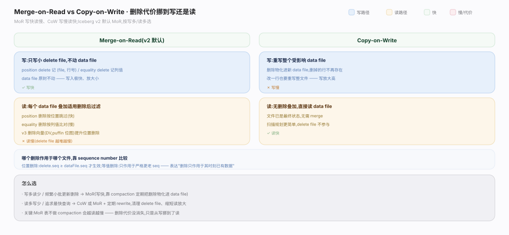
api/、core/)。| 结构 | 定义 | 职责 |
|---|---|---|
| DataFile.CONTENT | api/.../DataFile.java:37 | 0 数据/1 位置删/2 等值删 |
| DeleteFileIndex | core/.../DeleteFileIndex.java:73 | 四路索引 delete files |
| forDataFile | core/.../DeleteFileIndex.java:151 | 为 data file 找适用删除 |
| dvByPath (DV) | core/.../DeleteFileIndex.java:202 | 删除向量(v3,puffin 位图) |
| 论断 | 锚点 |
|---|---|
| DeleteFileIndex 主体：为 data file 查适用删除 | core/src/main/java/org/apache/iceberg/DeleteFileIndex.java:70 |
| globalDeletes（等值）四路索引之一 | core/src/main/java/org/apache/iceberg/DeleteFileIndex.java:73 |
| posDeletesByPath（位置删除按文件路径索引） | core/src/main/java/org/apache/iceberg/DeleteFileIndex.java:76 |
| forEntry / forDataFile：按 manifest entry / 文件查删除 | core/src/main/java/org/apache/iceberg/DeleteFileIndex.java:143、:147 |
| forDataFile(seq, file)：按序列号过滤适用删除 | core/src/main/java/org/apache/iceberg/DeleteFileIndex.java:151 |
| filter(seq)：位置删除按 delete.seq≥data.seq 生效 | core/src/main/java/org/apache/iceberg/DeleteFileIndex.java:686 |
| filter(seq, dataFile)：等值删除只作用严格更老 seq | core/src/main/java/org/apache/iceberg/DeleteFileIndex.java:768 |
| DataFile.CONTENT 区分 0=data/1=posDelete/2=eqDelete | api/src/main/java/org/apache/iceberg/DataFile.java:37 |
| delete file 写在 content=1 的 delete manifest，经 readDeleteManifest 读 | core/src/main/java/org/apache/iceberg/BaseSnapshot.java:276 |
| delete file 的 data_sequence_number 由 ManifestWriter 记 | core/src/main/java/org/apache/iceberg/ManifestWriter.java:161 |
| rowDelta 写删除仍走 SnapshotProducer 提交 + OCC | core/src/main/java/org/apache/iceberg/SnapshotProducer.java:480 |
| 扫描规划把适用删除附到 FileScanTask | core/src/main/java/org/apache/iceberg/ManifestGroup.java:177 |
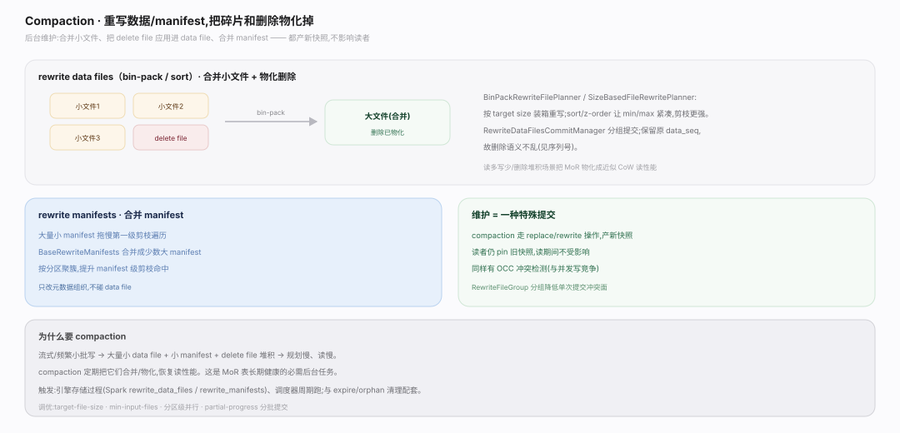
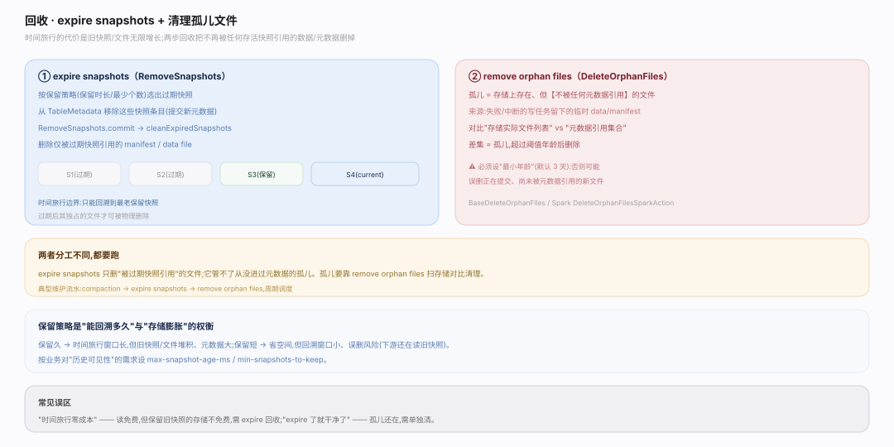
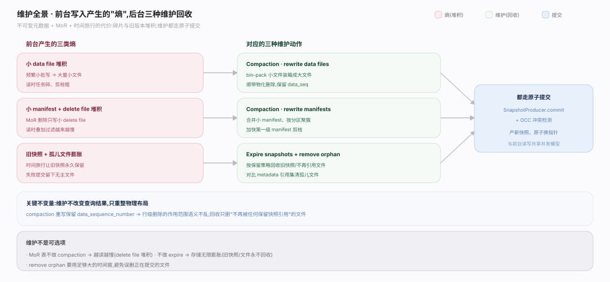
api/actions/、core/actions/)。target-file-size-bytes 定合并后文件大小;min-input-files 定触发阈值;分区级并行 + partial-progress 分批提交降低单次冲突/失败代价。max-snapshot-age-ms / min-snapshots-to-keep 平衡"能回溯多久"与"存储膨胀";下游还在读旧快照时别 expire 太狠。| 组件 | 职责 |
|---|---|
SizeBasedFileRewritePlanner / BinPackRewriteFilePlanner | 按 target size 装箱规划重写 |
RewriteDataFilesCommitManager | 分组提交重写,降低单次冲突面 |
RewriteFileGroup | 重写分组单元,缩小 OCC 冲突窗口 |
BaseRewriteManifests | 合并小 manifest、按分区聚簇实现 |
cleanExpiredSnapshots | expire 后删仅被过期快照引用的文件 |
BaseDeleteOrphanFiles | 存储 vs 元数据引用取差集清孤儿 |
| 结构 | 定义 | 职责 |
|---|---|---|
| RewriteDataFiles | api/.../actions/RewriteDataFiles.java | 合并小文件 / 物化删除(bin-pack、sort) |
| RewriteManifests | api/.../actions/RewriteManifests.java | 合并 manifest、按分区聚簇 |
| RemoveSnapshots | core/.../RemoveSnapshots.java | expire 过期快照 + 回收其独占文件 |
| DeleteOrphanFiles | api/.../actions/DeleteOrphanFiles.java | 对比存储 vs 元数据引用,清孤儿 |
| BinPackRewriteFilePlanner | core/.../actions/BinPackRewriteFilePlanner.java | 按 target size 装箱规划重写 |
| 论断 | 锚点 |
|---|---|
| rewrite data files（bin-pack 合并小文件、物化删除）action 契约 | api/src/main/java/org/apache/iceberg/actions/RewriteDataFiles.java:32 |
| rewrite manifests（合并小 manifest、按分区聚簇）action 契约 | api/src/main/java/org/apache/iceberg/actions/RewriteManifests.java:26 |
| expire snapshots：按保留策略回收旧快照与不再引用的文件 | core/src/main/java/org/apache/iceberg/RemoveSnapshots.java:61 |
| expireOlderThan：设定过期时间线 | core/src/main/java/org/apache/iceberg/RemoveSnapshots.java:125 |
| expire 也走原子提交（commit 换 metadata 指针） | core/src/main/java/org/apache/iceberg/RemoveSnapshots.java:360 |
| remove orphan files：清理无主文件（对比 metadata 引用集） | api/src/main/java/org/apache/iceberg/actions/DeleteOrphanFiles.java:34 |
| compaction 产新快照仍走 SnapshotProducer 提交路径 | core/src/main/java/org/apache/iceberg/SnapshotProducer.java:480 |
| 同样有 OCC 冲突检测（validateAddedDataFiles） | core/src/main/java/org/apache/iceberg/MergingSnapshotProducer.java:363 |
| 重写保留 data_sequence_number，行级删除作用范围语义不乱 | core/src/main/java/org/apache/iceberg/ManifestWriter.java:161（add(file,dataSeq)） |
| 快照引用的 manifest 由 BaseSnapshot 暴露（回收判活） | core/src/main/java/org/apache/iceberg/BaseSnapshot.java:204 |
| expire 判活要读 delete manifest | core/src/main/java/org/apache/iceberg/BaseSnapshot.java:276 |
| 新写 manifest 经 ManifestListWriter 汇总 | core/src/main/java/org/apache/iceberg/ManifestListWriter.java:63 |
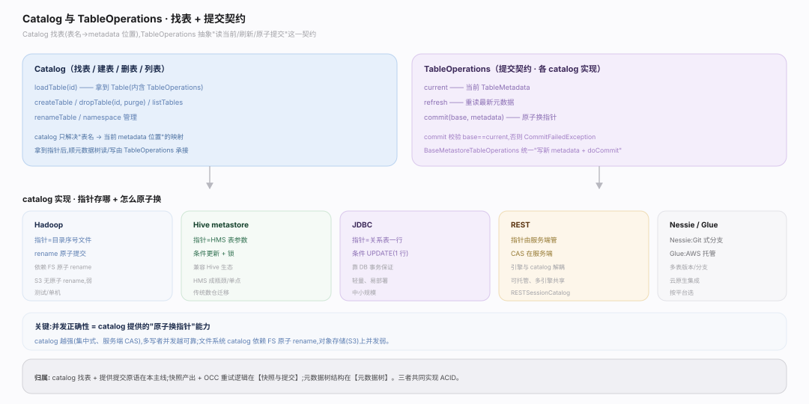
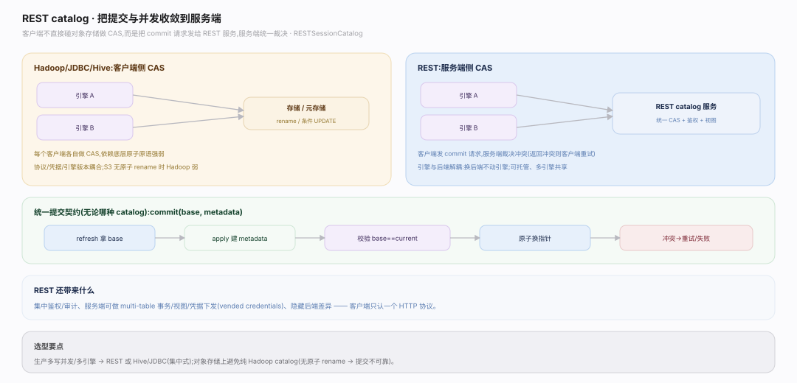
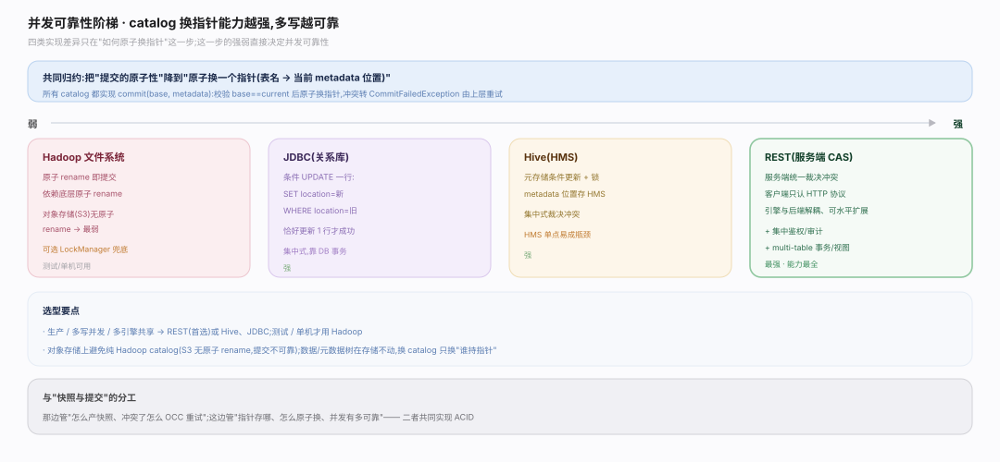
api/catalog/、core/)。| 结构 | 定义 | 职责 |
|---|---|---|
| Catalog | api/.../catalog/Catalog.java:33 | 表名→表映射、建/删/列表/改名 |
| TableOperations | core/.../TableOperations.java:28 | current/refresh/commit(base,metadata) 契约 |
| BaseMetastoreTableOperations | core/.../BaseMetastoreTableOperations.java:155 | writeNewMetadata + doCommit 公共流程 |
| HadoopTableOperations | core/.../hadoop/HadoopTableOperations.java:132 | rename 原子提交(文件系统) |
| JdbcTableOperations | core/.../jdbc/JdbcTableOperations.java:103 | 条件 UPDATE 一行提交(关系库) |
| RESTSessionCatalog | core/.../rest/RESTSessionCatalog.java | 服务端 CAS + 鉴权 + 视图 |
| 论断 | 锚点 |
|---|---|
| TableOperations 提交契约接口 | core/src/main/java/org/apache/iceberg/TableOperations.java:28 |
| current()：当前 TableMetadata | core/src/main/java/org/apache/iceberg/TableOperations.java:35 |
| refresh()：重读最新元数据 | core/src/main/java/org/apache/iceberg/TableOperations.java:42 |
| commit(base, metadata)：校验 base==current 后原子换指针 | core/src/main/java/org/apache/iceberg/TableOperations.java:64 |
| BaseMetastoreTableOperations 收敛公共流程 | core/src/main/java/org/apache/iceberg/BaseMetastoreTableOperations.java:42 |
| writeNewMetadata：写全新 metadata.json（版本号+1） | core/src/main/java/org/apache/iceberg/BaseMetastoreTableOperations.java:155 |
| writeNewMetadataIfRequired：按需写新元数据 | core/src/main/java/org/apache/iceberg/BaseMetastoreTableOperations.java:149 |
| TableMetadata 是被 CAS 交换的不可变状态 | core/src/main/java/org/apache/iceberg/TableMetadata.java:54 |
| 引擎侧经 BaseTable 拿到含 TableOperations 的句柄 | core/src/main/java/org/apache/iceberg/BaseTable.java:42 |
| OCC 冲突转 CommitFailedException 后由 SnapshotProducer 重试 | core/src/main/java/org/apache/iceberg/SnapshotProducer.java:485 |